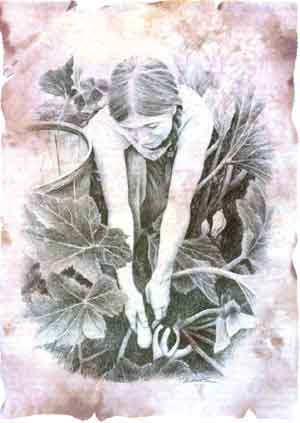

The Soul of Gardening
To define it is as hard as catching a butterfly on the wing. But some people have tried.
PART ONE
Taken from a great new quarterly, GreenPrints, which provides the "inspiration that goes with the perspiration." Available for $10 per year, from GreenPrints, P.O. Box 1355, Fairview, NC 28730.
SOMETHINGmore than food and flowers pulls us out into the garden each spring.
Something less tangible, yet all the more real. What could it be? The chance to touch nature? An excuse to play in the dirt? The annual opportunity to study the language of life? A feeling of faith, or perhaps one of prayer?
The more you try to examine the why of gardening, to pin down its wings and peer at its glittery markings, the more quickly it flutters just out of reach. Finally, you realize that there is no "soul of gardening," no one part like a thorax or an antenna you can hold in your hand. The very concept is forever multiple and elusive.
And just then, when you give up all hope of rational analysis, you also realize how fulfilling and fun the chase itself is. Indeed, when you quit trying to get one answer, you begin to fully enjoy all of them-and all the mental meanderings they entail.
Perhaps no season stirs the gardening soul to expression more than spring, after the opportunity to putter with plants has lain low for months, locked in winter inertia.
Charles Dudley Warner put it this way some 120 years ago:
"The love of dirt is among the earliest of passions, as it is the latest. Mud-pies gratify one of our first and best instincts. So long as we are dirty, we are pure. Fondness for the ground comes back to a man after he has run the round of pleasure and business, eaten dirt, and sown wild-oats, drifted about the world, and taken the wind of all its moods. The love of digging in the ground is as sure to come back to him as he is sure, at last, to go under the ground, and stay there."
Such joy belongs not just to our ancestors. When Bobby Fountain, a young Texan training to be a paralegal, was stuck recently writing an essay for his English class, he found these words bursting out:
"The first of February, my blood perks up like a coffeepot brewing, because, down here in Texas, February 14 is 'Tater Time.' The garden to me is a place to relax. You win whether you profit or not.
"When you begin to prepare the ground, you feel a weird, relaxing transfer of power. You see dirt loosening and mixing. You see worms and frogs emerging, feeling the warmth of spring. You smell fresh air and new-turned ground, new grass and new budding trees. When I see frogs breaking ground, I stop and watch. Whether it sounds crazy or not, I name them. This is mine, the place where I relax and communicate with God. I can feel it."
Still, not all images of spring ground breaking are soothing. Last year, I found that the roar of my Rototiller spurred less-sanguine thoughts, and I put them down:
“I keep tilling parallel lines, joyful and intent on the ribbon of soft, dark earth. But every one in a while, the noise intrudes and reminds me that-let's be honest-I'm chain-sawing the soil. Running a two-wheeled Cuisi-nart through the sleeping, brown earth. I wrestle the tiller through a tight 180° turn, flinging myself around in a half circle, and start down the next row. My thoughts take a new turn too.
A garden restores the body to usefulness-a victory for our species.
"Gardening is not a natural activity. Gather wild nuts and berries, forage feral fruits of the earth, if you want to be Joe (or Jo) Back-to-Nature. But don't tell me that osterizing the earth into brown marbles, yanking out every plant that wants to sprout in the soil, and then inserting the foliage you choose where you choose is a natural activity.
"The machine and I sputter to a halt. I gaze over the plot, envisaging its future, and my spring-inebriated self cries, 'It is too a natural activity.' Soon these chocolate rows of earth will nurture little seedlings that tug chords of protectiveness in my heart. Soon the sodden brown soil will turn green with life, a green flecked with yellow, blue, red, orange, pink, white. I kneel down and palm some of the prepared earth. It's dark, rich, loose. Five years ago, when I started this garden, it was pale, lean, slick. Cover crops and compost, fertilizer and time have turned this clay into loam. I, human, have intervened, but my efforts have steered this garden's life, made it better. Earth in hand, mind on soil, the relationship becomes clear. Gardening is an interface, a connecting portal. I tell the life I sow what I want it to do. It replies by what it does and doesn't. I listen to those answers, devise a response, and try again. With this dialogue, I delve into the language of another species, any, another phylum, trying to translate what it tells me, to serve it better so it can better serve me."
Contemporary rural essayist, farmer, and poet Wendell Berry is an advocate of the work value of gardening:
"One of the most important resources that a garden makes available for use is the gardener's own body. At a time when the national economy is largely based on buying and selling substitutes for common bodily energies and functions, a garden restores the body to its usefulness-a victory for our species. It may take a bit of effort to realize that perhaps the most characteristic modem 'achievement' is the obsolescence of the human body. Jogging and other forms of artificial exercise do not restore the usefulness of the body, but are simply ways of assenting to its uselessness; the body is a diverting pet, like one's Chihuahua, and must be taken out for air and exercise. A garden gives the body the dignity of working in its own support. It is a way of rejoining the human race."
Finally, there is T'ao Yung-Ming. Back in the fifth century A.D., he quit his job as magistrate because he no longer wanted to "crook the hinges of his knee" bowing to superiors. He retired to spend the last "bright hours" of life in his garden:
"And now I take my pleasure in my garden. There is a gate, but it is rarely opened. I lean on my staff as I wander about or sit down to rest. I raise my head and contemplate the lovely scene. Clouds rise, unwillingly, from the bottom of the hills; the weary bird seeks its nest again. Shadows vanish, but still I linger around my lonely pine. Home once more! I'll have no friendships to distract me hence. The times are out of joint for me, and what have I to seek from men? In the pure enjoyment of the family circle I will pass my days cheering my idle hours with lute and book. My husbandmen will tell me when the springtime is nigh, and when there will be work in the furrowed fields. Thither I will repair by cart or boat, through the deep gorge, over the dizzy cliff, trees bursting merrily into leaf, the streamlet swelling from its tiny source. Glad is this renewal of life in due season; but for me, I rejoice that my journey is over. Ah.! How short a time it is that we are here! Why then not set our hearts at rest, ceasing to trouble whether we remain or go? What boots it to wear out the soul with anxious thoughts? I want not wealth; I want not power; heaven is beyond my hopes. Then let me stroll through the bright hours as they pass, in my garden, among my flowers; or I will mount the hill and sing my song, or weave my verse beside the limpid brook. Thus will I work out my allotted span, content with the appointments of Fate, my spirit free from care."
|
 ILLUSTRATION BY JULIE WAWIRKA |
|
|